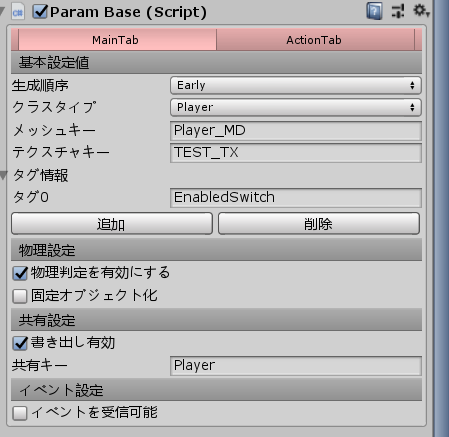
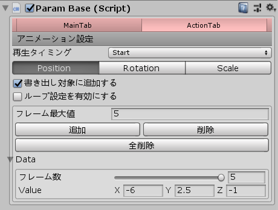
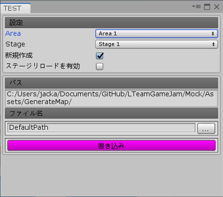
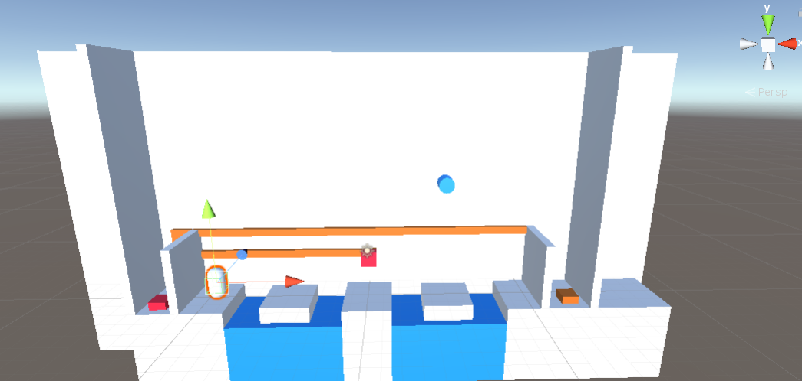

概要説明
1:ステージエディターを作成した理由
今回の制作では、複数のステージを効率的に作成しなければならなかっため、ステージエディターを作成するようになりました。
しかし、一から3Dゲーム用マップエディタを作成するのは、開発期間と工数の関係上現実的ではなかったため、UnityEditorを拡張することでステージエディターを作成する運びとなりました。
ステージエディターの仕様としては、まずUnity側でステージ配置・アクション設定・イベント設定・その他付随する設定等を行い、それをXML形式で書き出してゲームデータ側では、出力されたXMLファイルを読込それに基づいて、配置・イベント等の設定を行います。そうすることによって、Unity側で作ったステージをそのままゲームステージとして使えるため、大幅な作業コストの削減を実現する事ができます。
2:仕様
①パラメータ設定
1,基本設定

ここでは、配置データの他に追加で読み込む必要があるデータをセットします。
- ・基本設定値
-
- 生成順序
- Early・Default・Lateの三つから生成順序を設定する。設定した順序に応じてGame側では、生成される。
- クラスタイプ
- Game側でのクラス識別に使用される。識別登録をGame側でもしなければいけない。
- メッシュキー
- Game側で登録されているメッシュキーを設定する。登録されてないキーを指定すると実行時エラーが発生する。
- テクスチャキー
- Game側で登録されているテクスチャキーを設定する。登録されていないキーを設定すると白い状態で描画される。
- タグ情報
- Game側での、オブジェクトの識別タグとして使用する。複数指定ができるので、オブジェクト同士の共通処理等に使用できる。
- ・物理設定
-
- 物理設定を有効にする
- コリジョンを有効にする。無効化すると、当たり判定がなくなるため、オブジェクトがすり抜ける。
- 固定オブジェクト化
- オブジェクトの当たり判定を固定化にする、固定化するとそのオブジェクトの衝突応答が呼ばれなくなる。
- ・共有設定
-
- 書き出し有効
- 常に追従する必要のあるプレイヤーやゴールなどをアクセスしやすいように、共有領域に保存を有効にする。
- 共有キー
- 共有設定が有効の時に、ここで指定した、共有キーでオブジェクトを共有領域に保存する。もしオブジェクトを共有領域から参照する場合は、ここで登録した共有キーを用いて共有領域から参照する。
- ・イベント設定
-
- イベント受信可能
- スイッチイベント等を受け取る場合、この設定を有効にする。
- イベント受信キー
- 受信可能の場合、ここで指定した受信キーでイベントレシーバー登録される。スイッチ側では、ここで指定した受信キーをイベント送信先に設定された場合、イベントが発生した時にオブジェクトイベントが送信される。
2,アクション設定
- 再生タイミング
- Start・OnEvent・Endの三項目から設定する。Start・Endに設定すると、Game開始時と終了時に呼ばれるアクションを指定できる。OnEventに設定すると、スイッチ等のイベント時に呼ばれるアクションを設定できる。
- 「Position・Rotation・Scale」タブ
- このタブで選択している項目のアクションを、アクション追加ボタンを押すと追加される。
- 書き出し対象に追加
- この設定が有効状態になっていると、書き出されるマップデータに対象のアクションデータが含まれる。
- ループ設定を有効
- この設定が有効状態になっていると、呼ばれたアクションがループされるようになる。
- フレーム最大値
- 各アクションのフレーム数の最大値を設定する。
- 追加・削除・全削除ボタン
- タブで設定したアクションを、追加・削除を行います。全削除だと登録したアクションを全て削除され、削除だと直近で登録したアクションが削除されます。
- アクションデータリスト
- 追加したアクションはこのリストで表示される。リスト要素には、移動フレーム数・Value（移動値）がありこの項目を調整してアクションを設定する。移動フレーム数は、フレーム最大値より多くならないため0～フレーム最大値の間で移動フレーム数を設定する。
- アクションテスト機能
- Unityのゲームシーンを再生状態にすると、新たに再生ボタンが表示される。ボタンの種類は、再生・全再生・ReSetの三項目で、再生を押すとタブで対象となったアクションを再生し、全再生を押すと全て複合されたアクションが再生される、Resetを押すと初期状態に戻すことができる。
②書き出し設定

- ・設定
-
- エリア設定
- 書き出しエリア設定
- ステージ設定
- 新規作成
- ステージリロード設定
- パス情報
- ファイル名
③読込結果

→